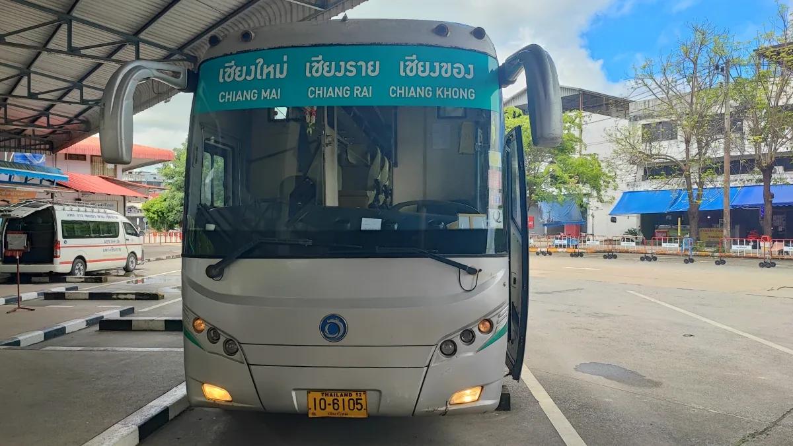
Let's do the cheapest border run!
Having acquired the new DTV in January 2025, I will be doing one or two border runs each year so over the next 5 years we will report on the multiple different options available.
I was in Vietnam in March for a conference, so that was my first out and back!
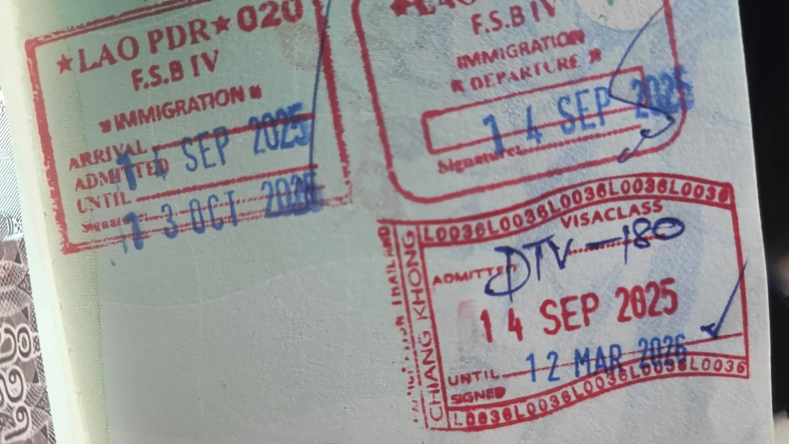
It starts with the ticket!

Border runs are a common activity for long-term travelers and expats in Thailand who need to renew their visas or extend their stay. Today and tomorrow, I embarked on my first experience with what I'd call the "cheapest" border run option. Well, not the absolute cheapest, but close. I opted to take the 1,000 baht VIP bus to Chiang Khong with a single seat option, choosing it over the slightly slower but less expensive 750 baht bus. I figured the extra comfort and speed would be worth it for this trip.
My journey began at 8:30 am at the Chiang Mai Arcade Bus Station with the Green Bus Company. I had booked my ticket 10 days in advance, which gave me full seat selection. If planning to try the cheapest border run, book your tickets at least 2-3 days ahead is essential to guarantee the seat and time you want. It's generally not possible to just show up on the day and get a seat on this popular route. Booked with Fair Fair (it's confusing)!
A 6 hour bus ride!
It's not the most fun experience but enough time to do my TDAC!
We left almost on time from gates 20 and 21 at Arcade 3 and headed north. This gave me some time to do my TDAC (Thailand Digital Arrival Card). The route took us through some roadworks near Chiang Rai, arriving there around 11:45 am. At that point, there was a quick 10-minute pit stop where half the bus disembarked.
Dropped almost in the middle of nowhere!
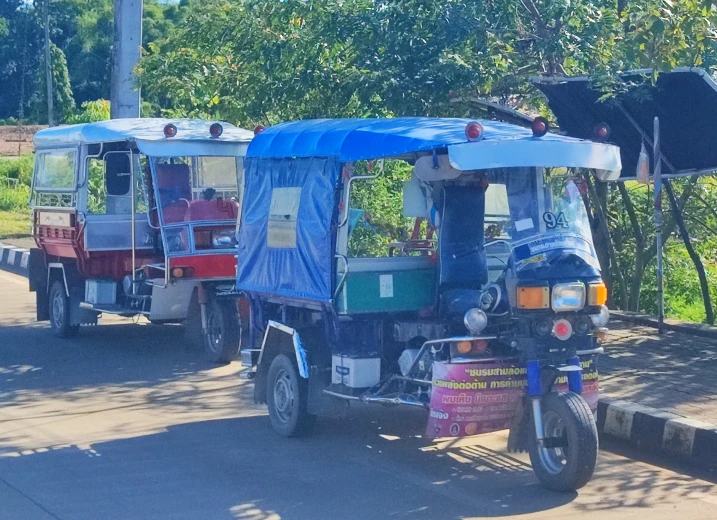
After a couple more hours, we reached the vicinity of the border around 2:30 pm. We arrived at the border intersection, where I caught a tuk tuk to the actual border checkpoint for 50 baht. Luckily these guys were here waiting for us!
We were a captive audience!
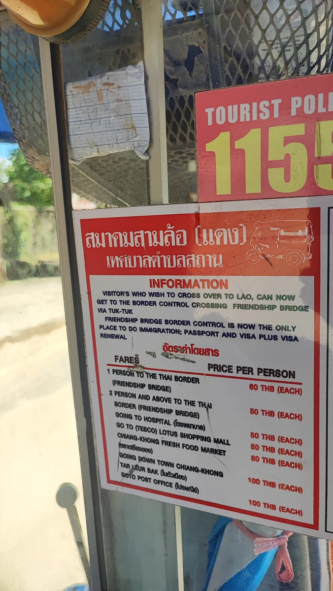
At the border!
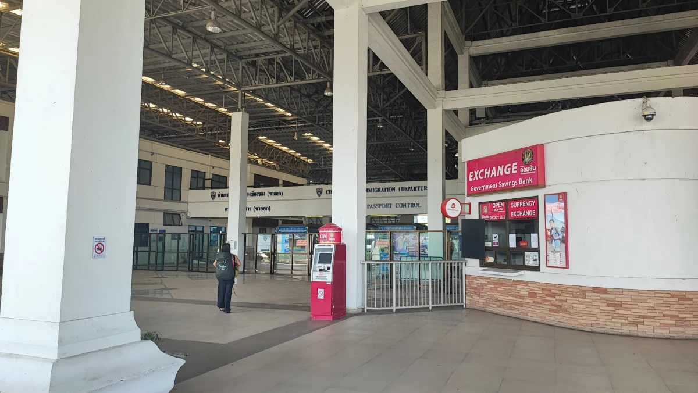
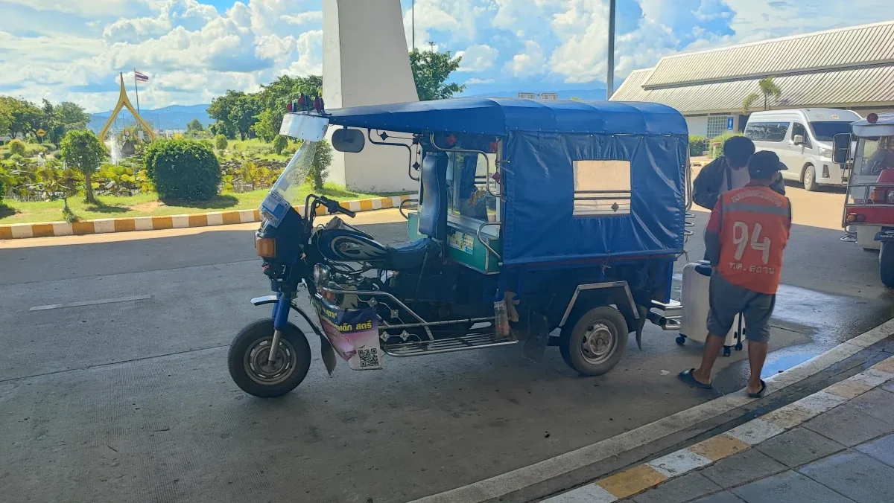
Upon arrival at the Thai border, exiting was straightforward, and by 2:35 pm, I was waiting for the 3 pm bus to Laos, which cost just 25 baht.
I took the opportunity for a pitstop and to charge my phone and have a chat with some of the Immigration officials who sadly follow Man United. I asked where to watch the football in Chiang Khong, and later I followed his suggestion.
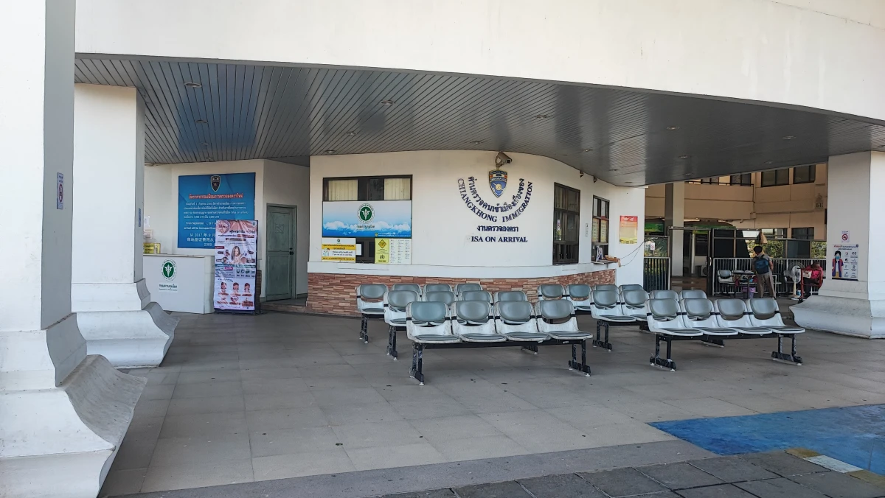
In Laos, well almost!
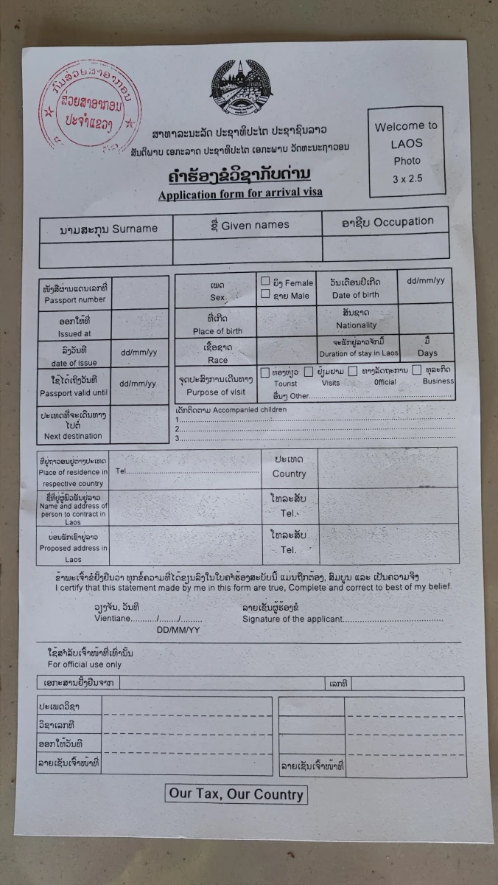
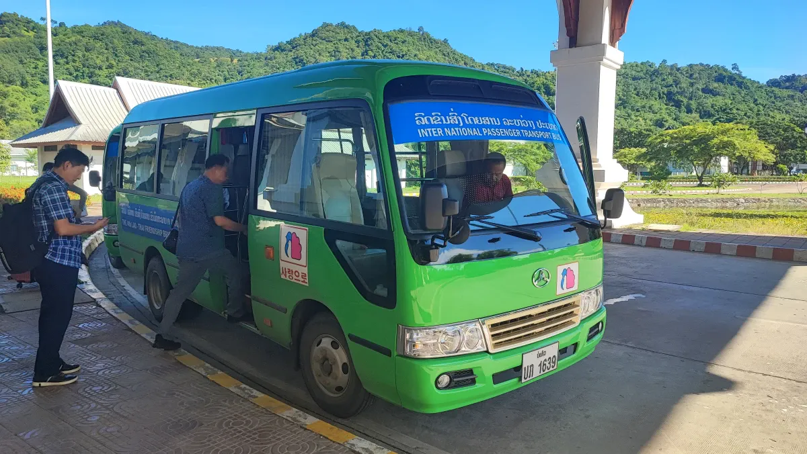
Once across the border into Laos by 3:10 pm, I started filling out the visa forms. However, just five minutes later, border officials informed me that since I was only doing a quick border bounce, I didn't need to fill out any forms. I only had to show my passport and pay USD $45. That was a nice surprise and saved a bit of hassle.
By 3:17 pm, I was waiting to board the bus back to Thailand. A group of Koreans arrived and filled the bus, so we departed promptly. By 3:30 pm, I was back in Thailand.
Back home!
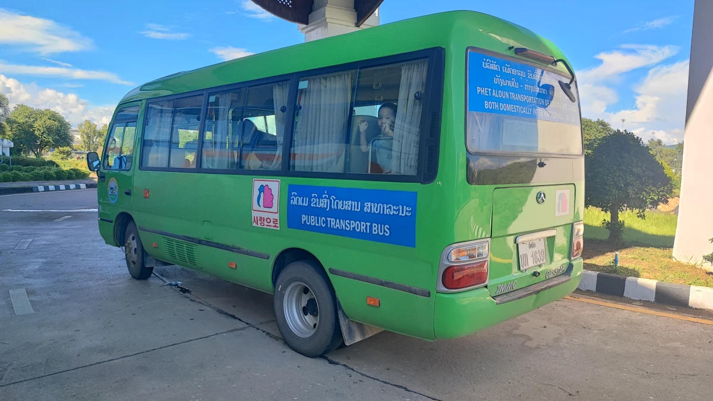
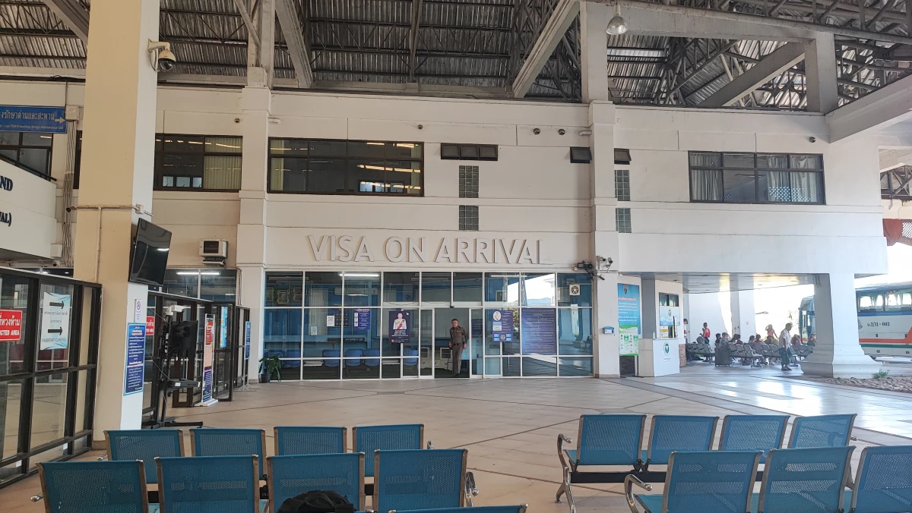
Back at the Thai immigration checkpoint, I tried to show my freshly completed TDAC QR code, and it must have been visible in the system because he only took a quick glance.
I enjoyed a brief chat with the officials who seemed amused and impressed by my understanding of the Northern Thai language. With smiles exchanged, I was free to continue my journey. When I hear others' immigration nightmares, it's hard to comprehend because I have never had any issues ever at any Thai border.
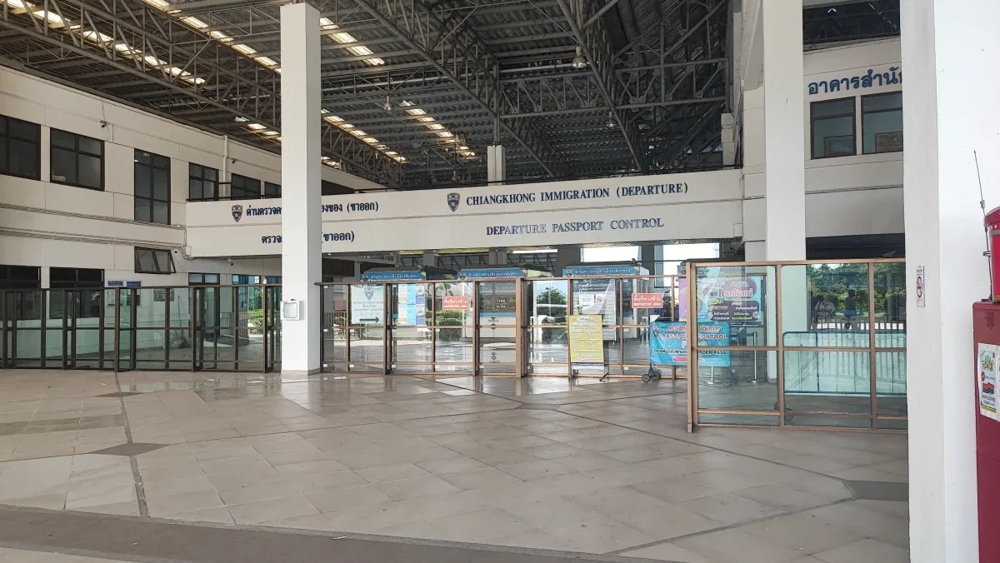
Next came the bus back to Chiang Khong city. The fare was 60 baht. After chatting with the ticket staff, they mentioned that if I paid for another ticket, they would take me straight away without waiting for more passengers. I bought that extra ticket, paid a total of 120 baht, and the bus dropped me right at my accommodation's doorstep.
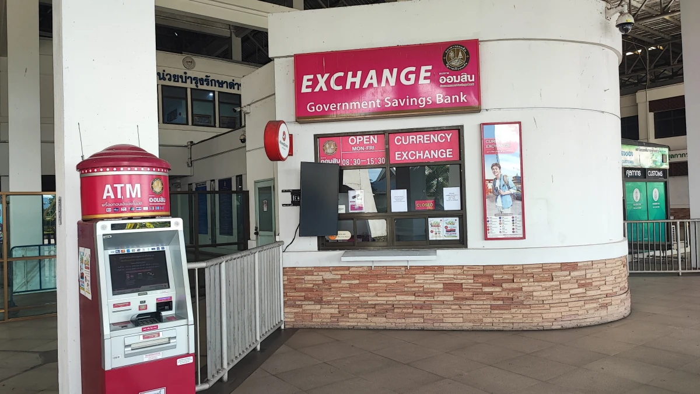
N.B. If you are travelling during banking hours Monday-Friday the GSB is open for currency exchange! USD $45 is a little cheaper than the 2,000 baht.